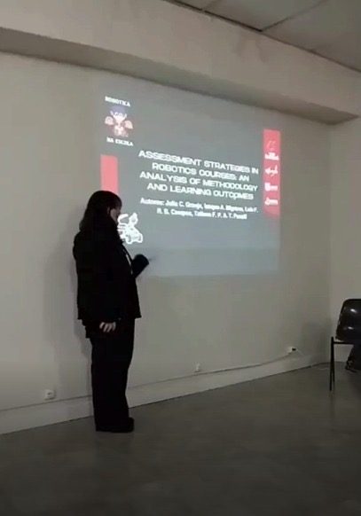

Equipe de robótica · UFSCar
Red Dragons
Entrei na equipe em dezembro de 2023. Em 2024, investiguei como avaliar o que os alunos aprendem nas aulas de robótica. No ano seguinte, passei a planejar essas aulas e a acompanhar os monitores nas escolas.

Equipe de robótica · UFSCar
Entrei na equipe em dezembro de 2023. Em 2024, investiguei como avaliar o que os alunos aprendem nas aulas de robótica. No ano seguinte, passei a planejar essas aulas e a acompanhar os monitores nas escolas.
2024 · Projetos Acadêmicos
Escrevi em coautoria o artigo Assessment Strategies in Robotics Courses: An Analysis of Methodology and Learning Outcomes e apresentei o trabalho no Workshop on Robotics in Education.
2025 · Diretora de Robótica na Escola
Compartilhei a coordenação dos monitores e planejei aulas semanais para cinco escolas públicas. Nas reuniões quinzenais, discutíamos o andamento das turmas. Em São Carlos e Ibaté, acompanhei estudantes na montagem e no teste de soluções com LEGO Education.
No Espaço Maker da UFSCar, ministrei uma oficina de montagem e programação de hardware com a SECOMP. Em parceria com a OBSAT, orientei estudantes na programação de satélites. Também ajudei a organizar a etapa regional da Olimpíada Brasileira de Robótica em São Carlos, com 200 equipes inscritas.